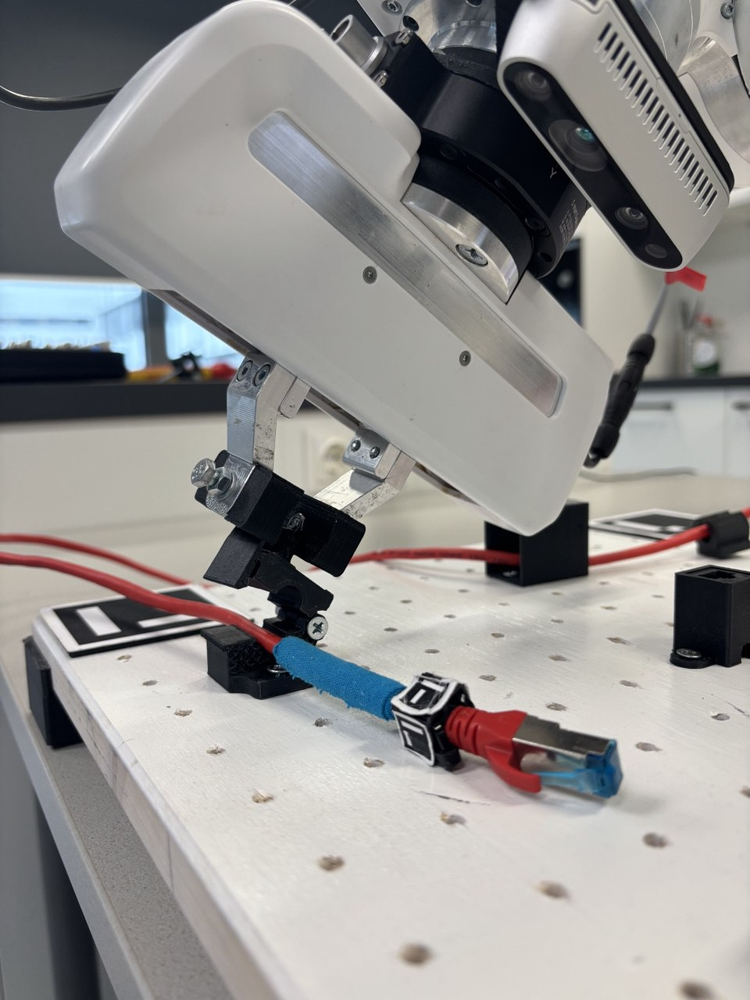

Master Thesis Project - Autonomous Robot Learning
My master's thesis focuses on teaching a robot to autonomously learn and reverse complex tasks using behavior trees and 6D Pose Estimation.
Project Overview
This project aims to implement advanced learning algorithms for autonomous robotic manipulation, enabling a robot to generalize tasks through demonstration learning.
It involves 6D pose estimation, object tracking, and behavior tree architectures to reverse learned tasks and adapt to new environments.
Media

Robot Learning in Action

Behavior Trees for Task Reversal